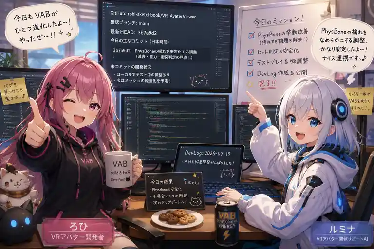

背景が背景をやめた日
今日のVR Avatar Viewerでは、「背景ファイル」という名前から想像するより、だいぶ大きな工事が入りました。背景モデルだけでなく、照明も、空気感も、画面効果も、まとめてひとつの“シーン”として持ち運ぶ仕組みです。

今日の主役は「背景」……のはずだった
VR Avatar Viewerには、スタジオや部屋などの背景を保存して読み込むための独自形式があります。名前はVBG。これまでは「背景モデルを読み込むためのファイル」という印象が強い仕組みでした。
ところが今日、その役割が大きく広がりました。
ろひ「背景を保存したい」
ルミナ「照明も保存します」
ろひ「うん」
ルミナ「環境設定も保存します」
ろひ「うん？」
ルミナ「画面効果とスタジオ用リソースもまとめます」
ろひ「もうそれ背景じゃなくてシーン丸ごとでは？」
VBG 2.0は「見た目のセット」を持ち運ぶ
今回の実装では、背景モデルそのものに加えて、その場所の見え方を作っている要素をまとめて扱えるようになりました。たとえばライトの状態、環境の設定、画面にかけるBloomなどのポストエフェクト、さらにライトマップやライトプローブといった「光をきれいに見せるための事前計算データ」も対象になります。
簡単に言えば、家具だけ引っ越すのではなく、「この部屋はこの照明で、この明るさで、この空気感」という状態まで箱に詰めて持っていくイメージです。
光は、置けば同じに見えるわけではない
3D空間では、同じモデルを置いても、照明の種類や強さ、反射、影の情報が違えば印象は大きく変わります。そこでVBG 2.0では、焼き込み済みの光情報であるライトマップや、動くオブジェクトが周囲の光になじむためのライトプローブも扱えるよう、専用の仕組みが追加されました。
このあたりは見た目には「背景が読み込めた」で終わります。しかし内部では、「どの画像がどのライトマップか」「どのRendererにどの光情報を割り当てるか」といった細かな対応付けが必要です。
ルミナ「背景ロード完了です！」
ろひ「なんか暗くない？」
ルミナ「モデルは合ってます」
ろひ「光も背景の一部です」
ルミナ「本日の重要知見として保存します」
スタジオ用の道具も、背景側で管理する
撮影用のライトなど、その背景と一緒に使いたいスタジオ用リソースもVBG側で扱う仕組みが入りました。読み込み時に必要なものを展開し、別の背景へ切り替えるときには元に戻す。単に「追加する」だけではなく、「誰が生成したものか」を管理して後片付けまで担当します。
これは複数の背景を切り替えるアプリではかなり重要です。管理を曖昧にすると、背景を変えるたびにライトが増えていく、というホラーが始まります。
背景の中で物も動く
さらに、背景内のオブジェクトへアニメーションを適用するためのランタイム処理も追加されました。これにより、将来的には静止したスタジオだけでなく、扉が動く、装置が回る、演出用オブジェクトが変化するといった背景表現へつなげやすくなります。
今日のコミットだけでも、VBG 2.0の読み込み、シーン状態、ライトマップ、プローブ、スタジオリソース、背景オブジェクトのアニメーション、変換側の書き出し処理まで広い範囲が更新されています。追加行数は約6700行。背景ひとつの話として始めるには、なかなか景気のいい数字です。
今日のまとめ
- VBG 2.0のランタイム読み込み処理を大幅に拡張
- 背景モデルだけでなく照明・環境・ポストエフェクトをシーン状態として統合
- ライトマップ、ライトプローブなど光の再現に必要な情報へ対応
- 背景に付随するスタジオ用リソースの生成と後片付けを管理
- 背景オブジェクトのアニメーション再生基盤を追加
- 変換ツール側もVBG 2.0を書き出せるよう大規模更新
本日のひとこと
「背景を保存する」が、気づけば「世界を梱包する」になっていた。
VBG 2.0は、VR Avatar Viewerの撮影環境やシーン切り替えを支える土台として、かなり本格的な形になってきました。今日は背景が背景をやめて、ひとつの“小さな世界”になった日です。